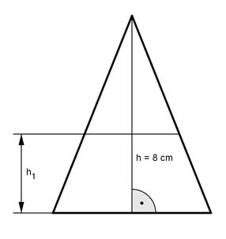
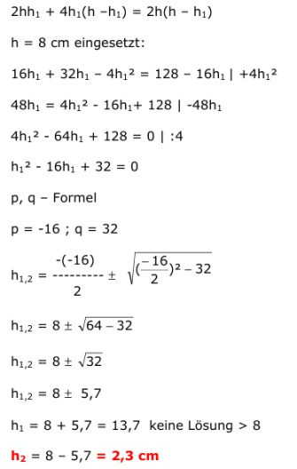

Flächenberechnungen Aufgabe 88 Wie groß muss man h1 machen, damit das gleichschenklige Dreieck halbiert wird?  Fläche A des kleinen Dreiecks: g2 * (h – h1) A = --------------- |*2 2 2 * A = g2 *(h – h1) |:(h – h1) 2 * A g2 = -------- h – h1 Fläche des Trapezes AT: (g1 + g2) AT = ------------- * h1 2 Fläche des großen Dreiecks = 2 * Fläche des kleinen Dreiecks: g1 * h 2 * A = -------- |*2 2 4 * A = g1 * h |:h 4 * A g1 = ------- h Eingesetzt in AT: 2 * A 4 * A -------- + ------- h – h1 h ------------------- * h1 = A 2 2 * A * h + 4 * A *(h – h1) ------------------------------ * h1 = A |*2*h*(h – h1) 2 * h * (h – h1) 2 * A * h * h1 + 4 * A * h1 * (h – h1) = 2 * A * h * (h – h1) |:A 